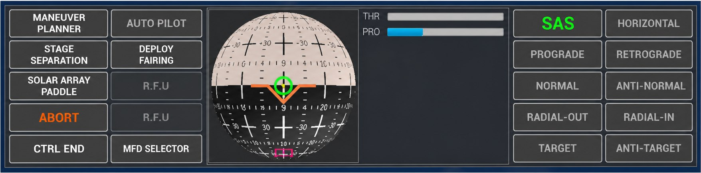
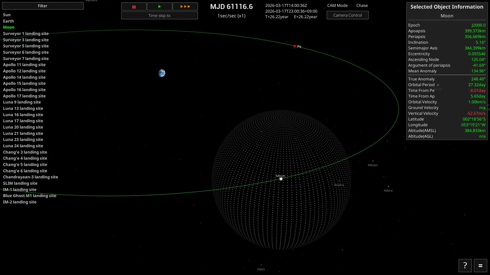
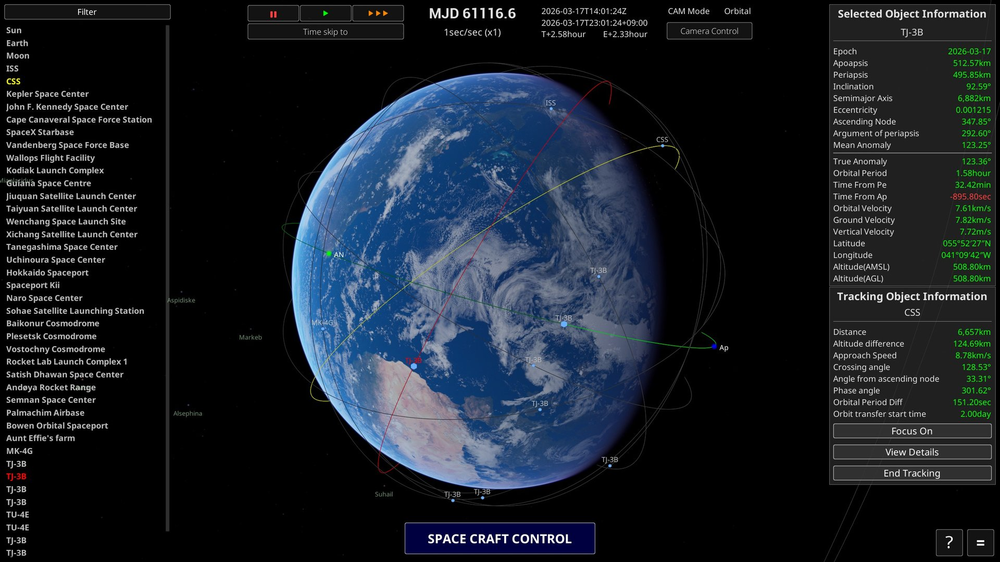
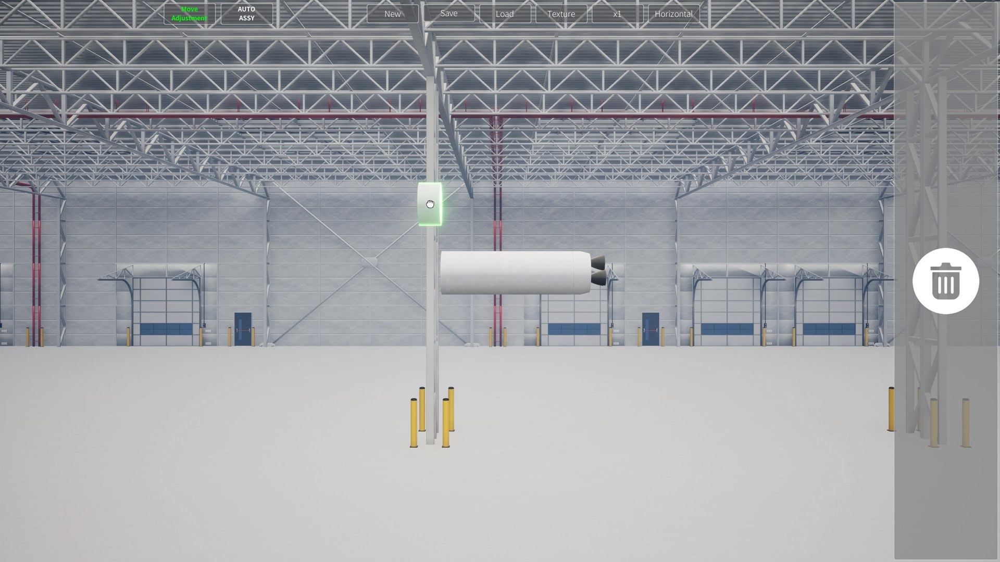
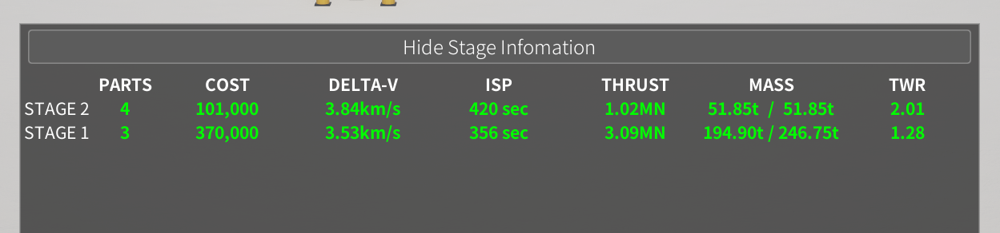
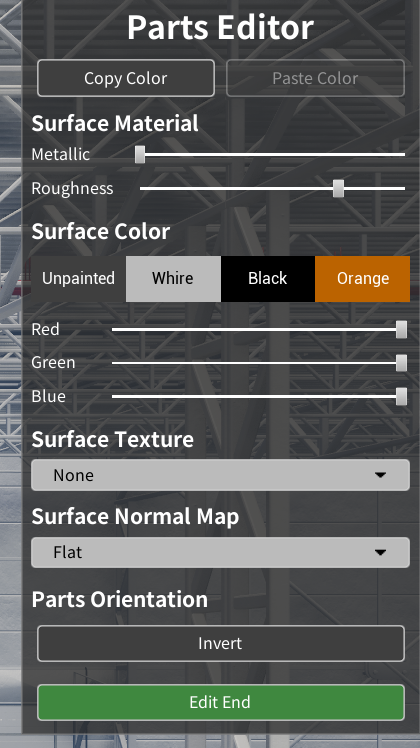
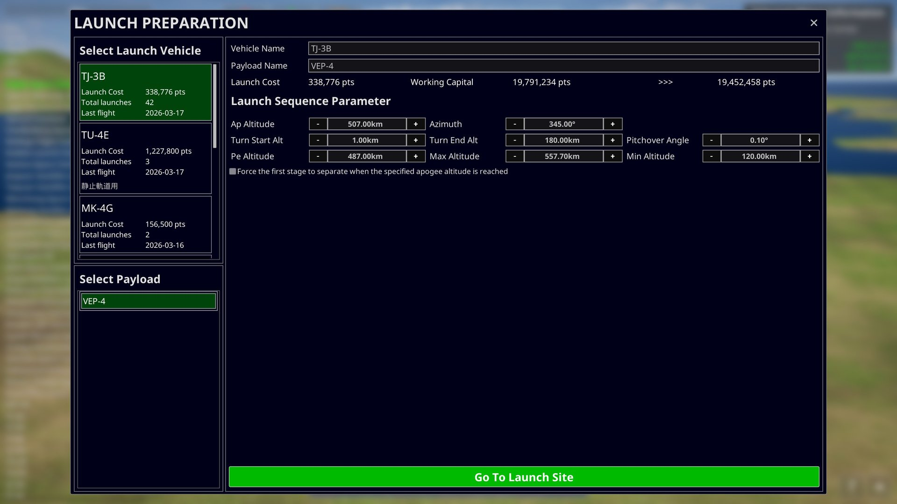
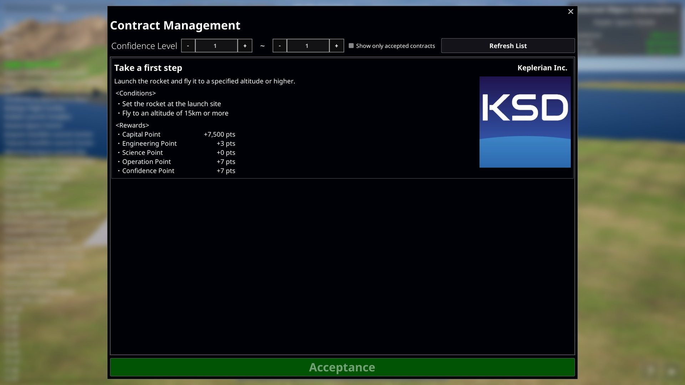
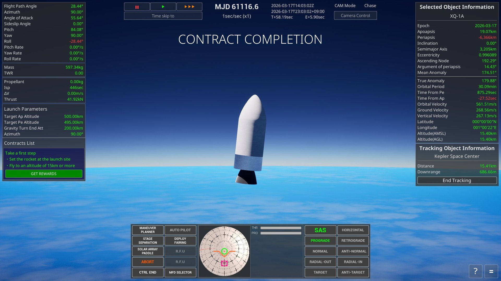
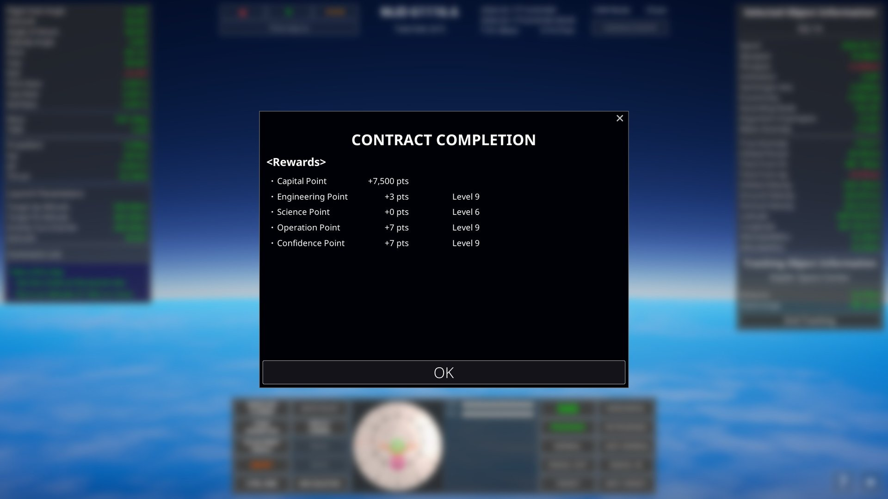

1. 시작하며
『Keplerian Space Discovery』는 실제 태양계와 세계 각지의 실존하는 발사 장소를 무대로 로켓을 조립하고 발사해 궤도에 올리는 우주 비행 시뮬레이션 게임입니다. 천체와 우주선의 운동은 케플러 궤도 역학에 따라 계산됩니다.
2. 퀵 스타트
새 게임을 시작하면 카메라 조작부터 첫 로켓 발사까지 안내하는 튜토리얼이 시작됩니다. 다음에 조작할 곳을 화면에 표시해 주므로, 처음 플레이할 때는 튜토리얼을 따라 진행하는 것을 권장합니다.
첫 번째 목표
튜토리얼에서는 계약 '첫걸음을 내딛으세요'를 수주하고 간단한 로켓을 조립해 고도 15 km에 도달합니다. 주요 흐름은 다음과 같습니다.
- 카메라의 회전, 확대, 평행 이동, 위치 초기화를 해 봅니다.
- '계약 관리'에서 계약 '첫걸음을 내딛으세요'를 수주합니다.
- '우주발사체 조립 공장'에서 엔진, 탱크, 노즈콘을 조합해 기체를 저장합니다.
- Kepler Space Center를 선택하고 '로켓 발사 준비'에서 기체를 발사대로 옮깁니다.
- '로켓 발사'로 자동 발사를 시작하고, 고도 15 km에 도달하면 계약 보상을 받습니다.
여기까지가 게임의 기본적인 흐름입니다. 계약을 달성해 보상을 얻고 새 기체를 개발하면서, 더 높은 고도와 주회 궤도를 노려 봅시다.
3. 메인 스크린

Object Selector
화면 왼쪽 목록의 항목을 마우스 왼쪽 버튼으로 클릭하면 선택 대상을 바꿀 수 있습니다.
마우스 가운데 버튼 클릭으로 대상을 타깃으로 지정할 수 있습니다.
Time Controls
- 시간 가속은 고도 1 km 이상부터 사용할 수 있습니다.
- '||'는 시간 정지, '▶'는 등속, '▶▶▶'는 ×10배입니다.
- '▶▶▶'는 계속 눌러 효과를 겹칠 수 있습니다. 한 번 누를 때마다 ×10배가 되므로, 세 번 누르면 ×1000배가 됩니다.
- 다만 상황마다 배율 상한이 있어 그 이상으로는 올라가지 않습니다. 예를 들어 대기권 안이나 엔진 분사 중에는 상한이 ×4이므로, '▶▶▶'를 눌러도 ×4까지만 올라갑니다. 상한 규칙은 '시간 가속 규칙'을 참조하세요.
우주선 조작 패널

조작 가능한 우주선을 선택하면 우주선 조작 패널이 열립니다. 패널에서는 SAS(자세 자동 유지), 자세 목표, 스테이지 분리 등 비행에 필요한 조작을 한곳에서 할 수 있습니다.
우주선을 직접 조종하려면 조종 모드로 전환합니다. 스로틀과 자세를 키보드로 조작하는 방법은 '수동 조종', SAS의 각 모드는 'SAS(자세 자동 유지)'을 참조하세요.
선택 오브젝트 정보
화면 오른쪽 위에는 현재 선택 중인 천체, 우주선, 지상 시설의 정보가 표시됩니다. 선택 오브젝트는 카메라가 바라보는 대상이 되며, 우주선을 선택한 경우에는 비행 조작과 시간 가속 상한의 기준이 되기도 합니다.
천체나 궤도상의 오브젝트에서는 원점과 근점, 긴반지름, 궤도 이심률, 궤도 경사, 궤도주기, 속도 등의 궤도 정보를 확인할 수 있습니다. 지상 부근에서는 위도, 경도, 해발 고도가, 우주선에서는 비행 상태에 따른 속도와 고도 등도 표시됩니다. 표시 항목은 오브젝트의 종류에 따라 다릅니다.
추적 오브젝트 정보
추적 대상을 지정하면 화면 오른쪽 아래에 선택 오브젝트와의 상대 정보가 표시됩니다. 거리, 고도 차이, 접근 속도, 교차 각도, 위상각 등을 이용해 랑데부나 접근 상황을 확인할 수 있습니다. 계산할 수 없는 항목은 n/a로 표시됩니다.
또한 각 버튼의 기능은 다음과 같습니다.
| 초점 맞추기 | 카메라가 바라보는 대상을 추적 대상으로 바꿉니다. |
| 상세 정보 | 추적 대상의 상세 정보를 엽니다. |
| 추적 종료 | 현재의 추적을 종료합니다. |
천체나 우주선을 마우스 가운데 버튼으로 클릭하거나 O 키를 누르면 추적을 시작할 수 있습니다.
Filter
Object Selector 위쪽의 Filter를 열면 우주선이나 지상 시설 등 천체 이외의 오브젝트를 목록에서 골라 표시하거나 숨길 수 있습니다. 숨긴 오브젝트는 Object Selector와 화면상의 마커에서 제외되며, 설정은 세이브 데이터에 저장됩니다.
게임 진행상 아직 이용할 수 없는 오브젝트나 발사 예정 시각에 이르지 않은 오브젝트는 필터 목록 자체에 표시되지 않습니다.
Camera Controls
화면 위쪽의 Camera Control에서 카메라 설정을 열 수 있습니다. 기본 조작은 오른쪽 드래그로 회전, 가운데 드래그로 평행 이동, 휠로 접근과 후퇴입니다. V 키(또는 가운데 버튼과 오른쪽 버튼 동시 누름)로 카메라 모드를 전환합니다.
| 모드 | 설명 |
|---|---|
| Chase | 선택 오브젝트를 기준으로 따라가는 일반 카메라입니다. |
| Free | 카메라의 방향과 롤을 자유롭게 조정할 수 있습니다. |
| Orbital | 궤도 전체를 보기 쉬운 거리와 방향으로 전환합니다. 지상 시설을 선택 중일 때는 사용할 수 없습니다. |
Home / End로도 접근과 후퇴가, I / K / J / L로도 회전이 가능합니다. Page Up / Page Down은 화각을, Insert / Delete는 노출을 조정합니다. 전체 조작은 'Control Keys'을 참조하세요.
NavBall 보는 법
NavBall은 우주선의 자세와 기준 방향을 구면 위에 표시합니다. Prograde는 진행 방향, Retrograde는 그 반대, Normal / Antinormal은 궤도면에 수직인 방향, Radial-Out / Radial-In은 모천체에서 본 바로 위와 바로 아래(Zenith / Nadir)를 가리킵니다. Target / Antitarget은 추적 대상의 방향과 그 반대, Maneuver는 설정한 분사 방향입니다.
Prograde / Retrograde 같은 속도 기준 마커는 궤도 진입 전에는 대기 속도 기준, 궤도 진입 후에는 관성 속도 기준입니다. 궤도 진입 판정은 근점 고도가 모천체의 대기권 경계(카르만 선)를 넘었을 때 이루어집니다. 이 전환은 SAS의 자세 목표 및 궤도선의 표시 기준과 일치합니다.
각 방향의 용도는 'SAS(자세 자동 유지)'을 참조하세요.
Map View
M 키로 Map View(Orbital 카메라)로 전환하면 선택 오브젝트의 궤도 전체를 넓은 시야로 확인할 수 있습니다. M 키를 한 번 더 누르면 일반 Chase 카메라로 돌아갑니다. 쌍곡선 궤도에서는 모천체의 SOI를 기준으로 표시 범위가 정해지며, 지상 시설을 선택 중일 때는 Map View로 전환되지 않습니다.
Map View에서는 궤도의 형태, 원점과 근점, 다른 오브젝트와의 위치 관계를 확인하면서 비행 계획을 세웁니다. 궤도 진입 전후로 궤도선의 표시 기준이 바뀌는 점은 '궤도선 보는 법'을 참조하세요.

궤도선 보는 법
화면에는 두 종류의 궤도선이 표시됩니다.
-예정 궤도 … 현재 위치와 속도로 계산한, 앞으로 날아갈 경로. 엔진 분사 중에는 가속에 맞춰 형태가 시시각각 변합니다.
-실적 궤도 … 실제로 지나온 경로의 기록(비행 궤적).
궤도선을 표시하는 방식은 비행 상태에 따라 자동으로 전환됩니다.
| 상태 | 표시 방식 |
|---|---|
| 발사 중, 탄도 비행 중(궤도 진입 전) | 지면에 고정한 표시. 궤적의 시작점이 발사대에 계속 머물러, 천체의 자전을 포함한 대지 경로(이대로 날면 어디에 떨어지는지)를 읽을 수 있습니다. |
| 궤도 진입 후 | 관성 공간에 고정한 표시. 천체의 자전과 관계없이 궤도 자체의 형태(타원)가 표시됩니다. |
전환되는 시점은 '근점 고도가 대기권 경계(카르만 선)를 넘었을 때'로, 이는 궤도 진입 판정과 같습니다. 이와 동시에 NavBall의 Prograde 등 마커의 기준도 대기 기준에서 관성 기준으로 전환됩니다.
여러 오브젝트의 궤도선이 겹칠 때는 색으로 대상을 구별할 수 있습니다.

| 궤도선 색 | 대상 |
|---|---|
| 녹색 | 현재 선택 중인 천체 또는 우주선 |
| 노란색 | 추적 오브젝트 |
| 빨간색 | 왼쪽 오브젝트 목록이나 화면상의 마커에서 포인터를 올려놓은 오브젝트 |
| 그 밖 | 선택, 추적, 마우스 올림 중 어디에도 해당하지 않는 오브젝트 |
SOI 표시
F3 키로 SOI(Sphere of Influence: 중력권)의 표시를 전환합니다. SOI는 우주선의 궤도 계산에서 그 천체를 중심 천체로 다루는 범위입니다.
위 화면에서는 달을 선택했으며, 달을 둘러싼 점으로 이루어진 구가 SOI, 녹색 선이 선택 중인 달의 궤도를 나타냅니다.
우주선이 현재 모천체의 SOI를 벗어나면 더 상위 천체를 중심으로 하는 궤도로 옮겨 갑니다. 반대로 달이나 행성 등 다른 천체의 SOI에 들어가면 그 천체를 중심으로 하는 궤도로 바뀝니다. 행성 간 비행이나 달 전이에서는 SOI 경계와 예정 궤도가 이어지는 지점을 확인하면 항로를 파악하기 쉬워집니다.
4. 우주발사체 조립 공장
우주발사체 조립 공장(VAB)에서는 부품을 조합해 자신만의 로켓을 설계하고 저장할 수 있습니다.

기본 조작
부품 배치하기
- 화면 왼쪽의 Parts Selector에서 배치할 부품을 마우스 왼쪽 버튼으로 고릅니다.
- 클릭한 뒤 버튼을 떼고, 마우스를 움직여 배치할 위치까지 끌고 갑니다(클릭한 채로 움직이는 것이 아닙니다).
- 원하는 위치에서 다시 클릭하면 그 위치에 부품이 확정 배치됩니다.
- 이미 배치된 부품 가까이에 배치하려고 하면 스냅되어 자동으로 연결됩니다.
Parts Selector 위쪽의 지름 탭(1.25 m / 2.5 m / 3.5 m / 5.0 m / 7.5 m / 10.0 m)을 바꾸면 그 지름에 해당하는 부품만 목록에 표시됩니다. 또 그 아래의 드롭다운(Engine 등)을 바꾸면 Tank, Fairing 같은 부품 종류를 전환할 수 있습니다.
배치한 부품 옮기기
이미 배치된 부품도 새로 배치할 때와 마찬가지로 왼쪽 클릭으로 잡고, 버튼을 뗀 상태로 옮긴 뒤 다시 왼쪽 클릭하면 위치가 확정됩니다. 연결된 부품을 잡으면 그 부품보다 앞에 연결된 자식 부품도 함께 움직입니다.
부품 연결하기
옮기는 중인 부품을 다른 부품에 닿게 하면 그 부품을 부모로 삼아 자동으로 연결됩니다. 기체의 중심축 부근에 배치하면 중심선에 스냅되어 탱크와 엔진 등을 곧게 정렬할 수 있습니다.
기체에서 떨어진 채로 둔 부품은 유효한 기체 구성으로 보지 않습니다. 저장할 때는 루트 부품에서 연결된 유효한 부품만 저장됩니다.
부품 삭제하기
부품을 왼쪽 클릭으로 잡으면 화면 오른쪽 끝에 삭제 영역이 표시됩니다. 잡은 부품을 삭제 영역까지 옮기면 그 부품을 삭제할 수 있습니다. 부품을 잡은 상태에서 Delete 키를 눌러도 삭제됩니다.

상단 툴바
| 버튼 | 설명 |
|---|---|
| Move Adjustment (토글) | 부품을 드래그로 옮길 때 안쪽 방향 거리를 어떻게 다룰지 전환합니다. 보통(OFF)은 부품을 잡았을 때의 안쪽 거리를 유지한 채 화면을 따라 움직입니다. ON으로 하면 부품의 안쪽 거리가 기체의 중심축에 맞춰진 상태로 움직이므로, 안쪽에 있는 부품을 기체 중심 부근으로 다시 끌어오기가 쉬워집니다. |
| AUTO ASSY (토글) | ON일 때는 부품을 클릭하면 지금 놓인 부품의 왼쪽에 자동으로 배치됩니다(첫 부품은 원점에 배치됩니다). OFF일 때는 클릭한 뒤 직접 마우스로 끌어 배치 위치를 정합니다(위의 기본 조작과 같습니다). |
| New | 현재 배치된 부품을 모두 삭제하고 새 로켓의 조립을 시작합니다. |
| Save | 조립 중인 로켓을 저장합니다. |
| Load | 저장한 로켓을 불러옵니다. |
| Texture | 로켓에 붙일 이미지(커스텀 텍스처)를 관리하는 대화 상자를 엽니다. 직접 만든 이미지를 등록해 두고 보기, 삭제, 추가를 할 수 있습니다. |
| x1～x6 | 부품을 방사형으로 여러 개 배치하는 개수를 전환합니다. 부스터 등 측면 부품을 배치할 때 사용합니다. x2 이상으로 설정한 상태에서 붙일 부품의 측면에 부품을 배치하면, 붙일 부품의 중심축을 기준으로 같은 간격으로 여러 개가 동시에 배치됩니다. 배치 후 복제된 부품은 하나의 그룹으로 다뤄집니다. |
| Horizontal / Vertical (토글) | 조립 중인 로켓의 표시 방향을 전환합니다. Horizontal은 수평 배치, Vertical은 수직 배치가 됩니다. |
스테이지 정보
화면 아래쪽의 'Show Stage Information'을 선택하면 현재 기체를 스테이지별로 나눈 성능 정보가 표시됩니다. 인터스테이지를 배치하면 그 위치를 경계로 스테이지가 자동으로 나뉩니다. 버튼을 한 번 더 선택하면 패널이 닫힙니다.

| 항목 | 설명 |
|---|---|
| PARTS | 그 스테이지를 구성하는 부품 수입니다. |
| COST | 그 스테이지에 포함된 부품의 합계 비용입니다. |
| DELTA-V | 그 스테이지가 낼 수 있는 속도 변화량의 기준입니다. 값이 클수록 궤도를 더 크게 바꿀 수 있습니다. |
| ISP | 엔진의 비추력입니다. 추진제를 얼마나 효율적으로 추력으로 바꿀 수 있는지를 초 단위로 나타냅니다. |
| THRUST | 그 스테이지의 엔진이 내는 합계 추력입니다. |
| MASS | 그 스테이지 단독의 질량과, 그 스테이지가 가속하는 상단을 포함한 합계 질량을 '스테이지 질량 / 합계 질량'으로 표시합니다. |
| 추력 대 중량비(TWR) | 추력이 중량의 몇 배인지를 나타냅니다. 1단에서 1.0 이하이면 추력이 중량을 넘지 못해 지상에서 이륙할 수 없습니다. |
현재 버전에는 해수면과 진공에서의 성능 표시를 전환하는 버튼이 없습니다.
저장과 불러오기
Save를 선택하면 기체 이름과 설명을 입력해 현재 기체를 저장할 수 있습니다. 불러온 기체를 편집해 저장한 경우에는 그 기체의 저장 내용이 갱신됩니다.New에서 새로 조립한 기체를 저장하면 다른 기체로 등록됩니다.
Load를 선택하면 저장된 기체를 목록에서 골라 VAB로 불러올 수 있습니다. 저장 대상이 되는 것은 루트 부품에서 연결된 유효한 부품뿐입니다.
Parts Editor
배치된 부품 위에서 마우스 오른쪽 버튼을 클릭하면 화면 오른쪽에 Parts Editor가 표시됩니다. 부품의 색, 재질의 느낌, 표면 무늬, 방향을 편집할 수 있습니다. 변경 내용은 화면상의 부품에 곧바로 반영되며, 기체를 저장하면 부품별 설정으로 저장됩니다.

| 항목 | 설명 |
|---|---|
| Copy Color | 현재 부품의 색과 표면 재질 설정을 임시로 복사합니다. 다른 부품에 같은 외관을 적용할 때 사용합니다. |
| Paste Color | Copy Color로 복사한 색과 표면 재질 설정을 편집 중인 부품에 적용합니다. 설정이 복사되지 않은 동안에는 선택할 수 없습니다. |
| Metallic | 표면의 금속 느낌을 조정합니다. 값을 크게 하면 주위의 빛을 금속처럼 반사하는 외관이 됩니다. |
| Roughness | 표면의 거칠기를 조정합니다. 값을 작게 하면 광택이 강해지고, 값을 크게 하면 반사가 흐릿하고 차분한 외관이 됩니다. |
| Unpainted / White / Black / Orange | 미리 준비된 색 프리셋입니다. Unpainted는 부품 본래의 색으로 되돌립니다. |
| Red / Green / Blue | 빨강, 초록, 파랑 성분을 슬라이더로 조정해 원하는 표면 색을 만듭니다. |
| Surface Texture | 부품 표면에 겹칠 이미지를 선택합니다. None은 이미지를 사용하지 않습니다. 상단 툴바의 Texture에서 등록한 커스텀 텍스처도 선택할 수 있습니다. |
| Surface Normal Map | 표면의 미세한 요철 표현을 선택합니다. Flat은 요철을 더하지 않고, 그 밖의 항목은 형상을 바꾸지 않은 채 표면 무늬의 음영을 더합니다. |
| Invert | 부품의 앞뒤 방향을 뒤집습니다. 엔진이나 노즈콘 등 장착 방향을 반대로 하고 싶을 때 사용합니다. |
| Edit End | 편집을 마치고 Parts Editor를 닫습니다. |
5. 발사와 비행
발사 준비
발사 장소를 선택하고 '로켓 발사 준비'를 열면 사용할 우주발사체와 페이로드를 고르고, 자동 발사의 목표 궤도와 비행 경로를 설정할 수 있습니다.

왼쪽 목록에서 우주발사체와 페이로드를 선택합니다. 우주발사체 칸에는 발사 비용, 발사 횟수, 마지막 비행일이 표시됩니다. 화면 위쪽에서는 우주발사체 이름과 페이로드 이름을 바꿀 수 있고, 발사 비용, 현재 자금, 발사 후 자금을 확인할 수 있습니다. 현재 버전에서는 발사 후 자금이 마이너스가 되는 경우에도 발사할 수 있습니다.
시작 시퀀스 매개변수
자동 발사에서 사용할 목표값을 설정합니다. 설정값은 우주발사체별로 저장되어, 다음에 같은 우주발사체를 선택했을 때도 사용됩니다.
| 항목 | 설명 |
|---|---|
| 원점 고도 | 진입할 궤도의 목표 원점 고도입니다. 상승 중에 예정 궤도의 원점이 이 고도에 이르면 엔진을 정지하고, 원점 부근까지 타행 비행합니다. |
| 근점 고도 | 진입할 궤도의 목표 근점 고도입니다. 원점 부근에서 엔진을 재점화해, 근점이 이 고도에 이를 때까지 궤도를 끌어올립니다. |
| 방위각 | 발사 후 기체를 기울여 나갈 수평 방향입니다. 북쪽을 0°, 동쪽을 90°, 남쪽을 180°, 서쪽을 270°로 지정합니다. 발사 장소의 위도와 방위각에 따라 진입할 수 있는 궤도 경사가 정해집니다. |
| 턴 시작 고도 | 중력 턴을 시작하는 고도입니다. 이 고도까지는 거의 수직으로 상승하고, 도달하면 방위각에 맞춰 롤한 뒤 기체를 서서히 기울이기 시작합니다. |
| 턴 종료 고도 | 중력 턴을 끝내는 고도입니다. 이 고도를 향해 기체를 서서히 수평에 가깝게 만듭니다. 도달 전에 예정 궤도의 원점이 목표 고도에 이르면 그 시점에 원점 조정으로 넘어갑니다. |
| Pitchover Angle | 중력 턴을 시작할 때 수직 자세에서 기체를 기울이기 시작하는 각도입니다. 0°에 가까울수록 수직에 가까운 자세에서 완만하게 턴을 시작하고, 값을 크게 하면 이른 단계부터 기체를 크게 기울입니다. |
| 최대 고도 | 근점 조정 중에 허용하는 원점 고도의 상한입니다. 원점이 이 값을 넘고 동시에 근점이 '최소 고도'를 넘은 경우에는 '근점 고도' 목표에 이르지 못했더라도 엔진을 정지하고 궤도 진입을 완료합니다. |
| 최소 고도 | '최대 고도'와 함께 사용하는, 궤도 진입 완료를 허용하는 근점 고도의 하한입니다. 보통의 목표 근점 고도는 '근점 고도'에서 지정합니다. |
| 1단 강제 분리 | '지정된 원점 고도에 도달하면 1단 로켓을 분리하도록 강제한다'를 켜면, 추진제가 남아 있어도 예정 궤도의 원점이 지정 고도에 이른 시점에 1단을 분리합니다. |
설정이 끝나면 '발사 장소로 이동'을 선택합니다. 선택한 우주발사체와 페이로드가 발사대에 배치되고, 발사 실행 화면으로 넘어갑니다.
자동 발사
발사는 목표 궤도를 지정하기만 하면 궤도 진입까지 자동으로 진행됩니다. 시퀀스는 실제 로켓과 같은 흐름으로 진행됩니다.
| 페이즈 | 내용 |
|---|---|
| 1. 리프트오프 | 엔진 점화. 추력이 기체 중량을 넘어선 순간 발사대를 떠납니다. |
| 2. 수직 상승 | 고도 약 1 km까지 곧게 상승합니다. |
| 3. 롤(방위각 맞추기) | 기체를 롤시켜 발사 방위각에 기체의 방향을 맞춥니다. |
| 4. 중력 턴 | 고도가 올라감에 따라 기체를 서서히 기울여 수평 방향 가속으로 옮겨 갑니다. |
| 5. 원점 조정과 MECO | 원점(Ap)이 목표 고도에 이르면 메인 엔진을 정지하고, 이어서 단 분리를 실시합니다. |
| 6. 타행 비행 | 원점 부근까지 관성으로 상승합니다. 이 동안에는 시간 가속이 자동으로 걸리고, 재점화가 가까워지면 자동으로 등속으로 돌아옵니다. |
| 7. 재점화와 근점 조정 | 원점 조금 앞에서 엔진을 재점화해, 근점(Pe)을 목표 고도까지 끌어올려 궤도를 둥글게 만듭니다. |
| 8. 궤도 진입 완료 | 근점이 목표 고도에 이르면 엔진을 정지합니다. 발사 시퀀스 종료입니다. |
이 밖에 비행 중에는 다음 이벤트가 자동으로 실행됩니다.
-부스터 분리 … 부스터의 추진제를 다 쓴 시점에 분리합니다.
-페어링 분리 … 대기권을 벗어난 고도 100 km 부근에서 분리합니다.
자동 발사 중에도 시간 가속 변경이나 카메라 조작은 자유롭게 할 수 있습니다. 분리나 재점화 등 볼거리 직전에는 시간 가속이 자동으로 등속으로 돌아옵니다.
수동 조종
우주선을 선택해 조종 모드로 하면 키보드로 직접 조종할 수 있습니다.
| 조작 | 키 | 설명 |
|---|---|---|
| 스로틀 증감 | Left Shift / Left Ctrl | 추력을 조금씩 올리고 내립니다. |
| 스로틀 최대 | Z | 추력을 단숨에 100 %로 만듭니다. |
| 스로틀 차단 | X | 추력을 0으로 만듭니다(엔진 정지). |
| 피치 | W / S | 기수를 위아래로 향합니다. |
| 요 | A / D | 기수를 좌우로 향합니다. |
| 롤 | Q / E | 기체 축을 중심으로 회전시킵니다. |
| 스테이지 분리 | Space | 현재 스테이지를 분리합니다. |
자세 변경의 응답은 기체의 관성 모멘트와 추력에 따라 정해집니다. 무거운 기체나 추력이 작은 상단에서는 자세가 천천히만 바뀐다는 점에 주의하세요.
SAS(자세 자동 유지)
SAS를 사용하면 지정한 방향으로 기체의 자세를 자동으로 계속 향하게 할 수 있습니다. 다음 모드가 있습니다.
| 모드 | 향하는 방향 |
|---|---|
| Prograde | 진행 방향. 가속해 궤도를 올릴 때 사용합니다. |
| Retrograde | 진행 방향의 반대. 감속해 궤도를 내릴 때 사용합니다. |
| Normal | 궤도면에 수직인 방향. 궤도 경사를 바꿀 때 사용합니다. |
| Antinormal | Normal의 반대 방향. |
| Zenith | 모천체의 중심에서 멀어지는 방향(바로 위). |
| Nadir | 모천체의 중심을 향하는 방향(바로 아래). |
| Target | 타깃으로 지정한 오브젝트의 방향. |
| Antitarget | 타깃의 반대 방향. |
| Maneuver | 설정한 매뉴버의 분사 방향. |
Prograde / Retrograde 같은 속도 기준의 방향은 궤도 진입 전에는 대기 속도(대기에 대한 속도) 기준, 궤도 진입 후에는 관성 속도 기준으로 자동 전환됩니다. 이는 NavBall의 마커 표시와 항상 일치합니다.
시간 가속 규칙
시간 가속의 상한은 선택 중인 우주선의 고도와 비행 상태에 따라 자동으로 정해집니다. 위에서부터 차례로 판정해, 가장 먼저 해당하는 것이 적용됩니다.
| 상태 | 상한 배율 |
|---|---|
| 다른 우주선이 200 m 이내에 있을 때 | ×1(등속만) |
| 다른 우주선이 1 km 이내에 있을 때 | ×4까지 |
| 고도 1 km 미만(발사 중은 제외) | ×1(등속만) |
| 고도 1 km～대기권 안, 또는 엔진 분사 중 | ×4까지 |
| 대기권을 충분히 벗어나 분사하지 않을 때 | 궤도 주기에 따라 자동 산출(대략 10초에 궤도를 한 바퀴 도는 배율까지) |
- 상한을 넘는 배율을 설정해 두었던 경우에는 자동으로 상한까지 낮아집니다.
- 접지나 우주선끼리의 접촉은 등속에서만 판정되므로, 저고도나 접근 중에는 상한이 낮아집니다. 발사 중에는 접촉 판정 대상이 아니므로, 이륙 직후부터 ×4까지 가속할 수 있습니다.
- 자동 발사 중에는 페이즈에 맞는 배율이 자동으로 설정됩니다(중력 턴 중 ×2, 원점 조정 중 ×4, 타행 비행 중 최대 ×60 등). 직접 배율을 바꾼 경우에는 그쪽이 우선됩니다.
- 스테이지 분리, 페어링 분리, 재점화 등의 직전에는 놓치지 않도록 자동으로 등속으로 돌아옵니다.
6. 계약
계약은 지정된 비행이나 임무를 달성해 보상을 얻기 위한 목표입니다. 얻은 자금과 각종 포인트를 사용해 조직을 성장시키고, 더 어려운 임무로 나아갑니다.

계약을 수주하다
- 화면 오른쪽 아래의 메뉴를 열고 '계약 관리'를 선택합니다.
- '계약 목록'에서 내용을 확인하고 싶은 계약을 선택합니다.
- 계약의 설명, '<조건>', '<보상>'을 확인합니다.
- '계약을 체결하다'를 선택하면 그 계약이 수주 중이 됩니다.
'승인된 계약만 표시'를 켜면 현재 진행 중인 계약만 확인할 수 있습니다. 수주를 취소할 때는 해당 계약을 선택하고 '계약의 취소'를 고릅니다.
달성 조건과 완료
수주 중인 계약은 비행 중을 포함해 달성 상황이 자동으로 판정됩니다. 달성 조건이 여러 개인 계약에서는 모든 조건을 만족해야 합니다.
계약을 달성하면 완료 화면이 표시됩니다. '보상 받기'를 선택해 결과를 확인하세요. 첫 계약 '첫걸음을 내딛으세요'에서는 로켓을 발사대에 배치하고 고도 15 km 이상에 도달하는 것이 목표입니다.

'보상 받기'를 선택하면 획득한 각 포인트와 현재 레벨이 표시됩니다. 내용을 확인하고 'OK'를 선택해 화면을 닫습니다.

보상
계약마다 다음 보상이 설정되어 있습니다. 보상이 0포인트인 항목도 있습니다.
| 보상 | 주요 역할 |
|---|---|
| 자본 | 발사할 때 비용으로 사용합니다. 기체 제작 자체에는 필요하지 않습니다. |
| 공학 | 공학 레벨을 올려 더 고급 부품을 사용하기 위해 필요합니다. |
| 과학 | 과학 레벨을 올려 일부 부품과 대상을 사용할 수 있게 하기 위해 필요합니다. |
| 작전 | 운용 레벨을 올립니다. 운용 레벨이 오르면 표시되는 발사 장소가 늘어납니다. |
| 자신감 | 신뢰 레벨을 올립니다. 신뢰 레벨이 오르면 선택할 수 있는 계약의 종류가 늘어납니다. |
7. 궤도의 기초 지식
케플러 궤도 요소
우주선이나 천체의 궤도는 여섯 개의 수치 조합인 '케플러 궤도 요소'로 나타냅니다. 이 게임 제목의 유래이며, 게임 안의 모든 궤도 정보의 기초입니다. 여섯 요소는 역할별로 세 그룹으로 나누면 이해하기 쉬워집니다.
| 요소 | 의미 |
|---|---|
| 궤도의 형태와 크기 | |
| 긴반지름 a | 궤도의 크기. 타원의 긴 쪽 지름의 절반입니다. 값이 클수록 높은 궤도가 되며, 궤도주기도 이 값으로 정해집니다. |
| 궤도 이심률 e | 궤도가 찌그러진 정도. 0이면 완전한 원, 0～1이면 타원이 됩니다. 1 이상이 되면 궤도가 닫히지 않고 모천체의 중력권에서 벗어나게 됩니다. |
| 궤도면의 방향 | |
| 궤도 경사 i | 적도면에 대한 궤도면의 기울기. 0°는 적도 상공을 도는 궤도, 90°는 북극과 남극 상공을 지나는 극궤도입니다. 90°를 넘으면 천체의 자전과 반대 방향으로 도는 역행 궤도가 됩니다. |
| 승교점 경도 Ω | 궤도가 적도면을 남쪽에서 북쪽으로 가로지르는 점(승교점)이 기준 방향에서 어느 방위에 있는지. 기울어진 궤도면이 어느 쪽을 향하는지를 정합니다. |
| 근점 편각 ω | 승교점에서 궤도를 따라 재어 근점이 어느 위치에 오는지. 궤도면 안에서 타원의 방향을 정합니다. |
| 궤도상의 위치 | |
| 평균 근점 이각 M | 궤도 한 바퀴 중 지금 어디에 있는지를 나타내는 각도. 시간이 지남에 따라 일정한 비율로 늘어나며, 360°가 한 바퀴입니다. |
- 원점(Ap)과 근점(Pe)의 고도는 긴반지름 a와 궤도 이심률 e로 정해집니다.자동 발사의 목표 궤도도 원점 고도와 근점 고도로 지정합니다.
- 발사로 그대로 진입할 수 있는 궤도 경사는 발사 장소의 위도가 하한입니다. 저위도의 발사 장소일수록 노릴 수 있는 궤도의 자유도가 높아집니다.
- 동쪽으로 발사하면 천체의 자전 속도가 그대로 가속 보너스가 됩니다(지구 적도에서 약 465 m/s). 많은 발사 장소가 동쪽으로 바다가 트인 곳에 있는 것은 이 때문입니다.
8. 레퍼런스
Control Keys
| 조작 | 키보드 | 마우스 | 게임패드 |
|---|---|---|---|
| 카메라 회전 | I/K/J/L | 오른쪽 버튼 + 드래그 | 오른쪽 스틱 |
| 카메라 평행 이동 | - | 가운데 버튼 + 드래그 | - |
| 카메라 접근·후퇴 | Home/End | 휠 | L/R 트리거 |
| 카메라 화각 | Page Up/Down | - | - |
| 카메라 노출 | Insert/Delete | - | - |
| 카메라 모드 전환 | V | 가운데 버튼 + 오른쪽 버튼 | Back 버튼 |
| 카메라 방향 *1 | - | 왼쪽 버튼 + 드래그 | - |
| 카메라 롤 *1 | Q/E | - | L/R 숄더 |
| 카메라 초기화 | - | 왼쪽 버튼 + 오른쪽 버튼 | 오른쪽 스틱 누름 |
| Map View | M | - | - |
| UI 표시/숨김 | F2 | - | - |
| SOI 표시/숨김 | F3 | - | - |
| 퀵 세이브 | F5 | - | - |
| 퀵 로드 | F9 | - | - |
| 추적 시작 | O | 목록에서 오른쪽 클릭 | Y 버튼 |
| 메뉴 열기 | ESC | - | Start 버튼 |
| 우주선 조작 패널 열기 *2 | C | - | X 버튼 |
| 스로틀 최대 *3 | Z | - | - |
| 스로틀 차단 *3 | X | - | - |
| 스로틀 증가 *3 | Left Shift | - | - |
| 스로틀 감소 *3 | Left Ctrl | - | - |
| 스테이지 분리 *3 | Space | - | - |
| 롤 *3 | Q/E | - | - |
| 피치 *3 | W/S | - | - |
| 요 *3 | A/D | - | - |
| 디버그 콘솔 | ALT + F12 | - | - |
*1 : 카메라 모드가 'Chase' 이외일 때.
*2 : 우주선을 선택하고 있을 때만.
*3 : 우주선 조종 모드일 때만.
발사 장소 목록
게임 안에서 이용할 수 있는 발사 장소 목록입니다. 설립일과 위도·경도는 게임 데이터에 등록된 값을 나타냅니다.
| 발사 장소 이름 | 설립일 | 위도 | 경도 | 비고 |
|---|---|---|---|---|
| Kepler Space Center | 1950/01/01 | 북위 0.00° | 동경 1.00° | 게임 안에만 등장하는 가상의 우주 센터. |
| Kennedy Space Center | 1962/07/01 | 북위 28.52° | 서경 80.65° | 달 탐사, 스페이스 셔틀, 유인 우주 비행의 거점으로 사용되어 온 대형 발사 장소. |
| Cape Canaveral Space Force Station | 1950/07/24 | 북위 28.49° | 서경 80.58° | 초기 우주 개발부터 현재까지 다양한 로켓의 발사에 사용되고 있는 대규모 발사 장소. |
| SpaceX Starbase | 2002/05/06 | 북위 26.00° | 서경 97.15° | Starship과 Super Heavy의 개발·제조·시험·발사를 담당하는 전용 거점. |
| Vandenberg Space Force Base | 1941/01/01 | 북위 34.73° | 서경 120.56° | 남쪽으로 외해가 트여 있어 극궤도나 태양 동기 궤도로의 발사에 적합한 발사 장소. |
| Wallops Flight Facility | 1945/01/01 | 북위 37.94° | 서경 75.46° | 관측 로켓, 과학 기구, 소형 궤도 임무 등을 다루는 연구·시험 거점. |
| Kodiak Launch Complex | 1998/01/01 | 북위 57.44° | 서경 152.34° | 고경사 궤도나 극궤도로의 발사에 적합한, 바다로 둘러싸인 발사 장소. |
| Guiana Space Centre | 1964/04/14 | 북위 5.23° | 서경 52.76° | 적도에 가까워 지구의 자전을 활용한 정지 천이 궤도로의 발사에 유리한 발사 장소. |
| Jiuquan Satellite Launch Center | 1958/01/01 | 북위 40.95° | 동경 100.29° | 유인 우주선과 저궤도 위성 발사로 알려진 내륙의 발사 장소. |
| Taiyuan Satellite Launch Center | 1966/01/01 | 북위 38.84° | 동경 111.60° | 극궤도나 태양 동기 궤도로의 위성 발사를 많이 담당하는 내륙의 발사 장소. |
| Wenchang Space Launch Site | 2014/10/18 | 북위 19.61° | 동경 110.95° | 저위도의 해안에 있으며, 대형 로켓이나 심우주 임무에 사용되는 발사 장소. |
| Xichang Satellite Launch Center | 1982/01/01 | 북위 28.24° | 동경 102.02° | 정지 천이 궤도의 위성과 달·행성 탐사선의 발사에 사용되는 발사 장소. |
| Tanegashima Space Center | 1969/10/01 | 북위 30.40° | 동경 130.98° | 대형 로켓의 조립·시험·발사 설비를 갖춘 해안의 발사 장소. |
| Uchinoura Space Center | 1963/12/09 | 북위 31.25° | 동경 131.07° | 과학 관측 로켓, 과학 위성, 탐사선의 발사와 추적을 실시하는 산간의 발사 장소. |
| Hokkaido Spaceport | 2021/04/20 | 북위 42.50° | 동경 143.44° | 민간 이용에 열려 있으며, 관측 로켓과 장래의 궤도 발사를 지원하는 상업 우주항. |
| Spaceport Kii | 2021/01/01 | 북위 33.54° | 동경 135.89° | 소형 고체 연료 로켓 KAIROS의 발사 거점으로 건설된 전용 발사 장소. |
| Naro Space Center | 2009/06/11 | 북위 34.43° | 동경 127.53° | 나로호와 누리호 등의 로켓 개발·발사에 사용되는 해안의 우주 센터. |
| Sohae Satellite Launching Station | 2012/03/01 | 북위 39.66° | 동경 124.71° | 인공위성 발사 설비와 대형 로켓 시험 설비를 갖춘 해안의 발사 장소. |
| Baikonur Cosmodrome | 1955/06/02 | 북위 45.96° | 동경 63.30° | 세계 최초의 인공위성과 최초의 유인 우주 비행을 내보낸, 역사가 긴 우주 기지. |
| Plesetsk Cosmodrome | 1957/07/15 | 북위 62.92° | 동경 40.57° | 고위도에 있어 극궤도나 고경사 궤도로의 발사에 적합한 우주 기지. |
| Vostochny Cosmodrome | 2011/08/01 | 북위 51.88° | 동경 128.33° | 소유즈와 앙가라 등의 발사에 대응하는, 비교적 새로운 우주 기지. |
| Rocket Lab Launch Complex 1 | 2016/09/26 | 남위 39.26° | 동경 177.87° | Electron 로켓을 운용하며, 소형 위성의 고빈도 발사를 상정한 민간 발사 장소. |
| Satish Dhawan Space Centre | 1971/10/09 | 북위 13.71° | 동경 80.23° | PSLV, GSLV, LVM3 등을 운용하며, 여러 발사대를 갖춘 대형 우주 센터. |
| Andøya Space | 1962/08/18 | 북위 69.29° | 동경 16.02° | 관측 로켓과 대기·오로라 관측에서 실적을 쌓았고, 궤도 발사 설비도 갖춘 발사 장소. |
| Semnan Space Center | 2006/11/02 | 북위 35.23° | 동경 53.92° | 소형 위성 발사용 로켓의 발사와 시험에 사용되는 내륙의 발사 장소. |
| Palmachim Airbase | 1988/09/19 | 북위 31.90° | 동경 34.69° | 서쪽 해상을 향해 발사하기 때문에 역행 궤도 진입으로 알려진 발사 장소. |
| Aunt Effie's Farm | 1926/03/16 | 북위 42.22° | 서경 71.81° | 발사 장소가 아니라, 로버트 고더드가 1926년에 세계 최초의 액체 연료 로켓을 발사한 시험지. |
용어집
매뉴얼과 게임 안에서 사용하는 주요 용어입니다.
| 용어 | 의미 |
|---|---|
| 궤도·비행 | |
| 원점(Ap / Apoapsis) | 궤도상에서 모천체로부터 가장 먼 점입니다. 발사 시에는 상승 중의 가속으로 예정 궤도의 원점 고도를 목표까지 끌어올립니다. |
| 근점(Pe / Periapsis) | 궤도상에서 모천체에 가장 가까운 점입니다. 원점 부근에서 가속해 근점을 대기권 밖까지 끌어올리면 안정된 주회 궤도가 됩니다. |
| 케플러 궤도 요소 | 궤도의 크기, 형태, 방향, 궤도상의 위치를 나타내는 여섯 개의 수치입니다. 자세히는 '케플러 궤도 요소'을 참조하세요. |
| 긴반지름(a) | 궤도의 크기를 나타내는 값입니다. 타원의 긴 쪽 지름의 절반에 해당하며, 궤도주기에도 영향을 줍니다. |
| 궤도 이심률(e) | 궤도가 찌그러진 정도를 나타내는 값입니다. 0이면 원, 0보다 크고 1 미만이면 타원, 1 이상이면 닫히지 않는 탈출 궤도가 됩니다. |
| 궤도 경사(i) | 모천체의 적도면에 대한 궤도면의 기울기입니다. 0°는 적도 궤도, 90°는 극궤도입니다. |
| 승교점 경도(LAN / Ω) | 궤도가 적도면을 남쪽에서 북쪽으로 가로지르는 승교점의 방향을 나타내며, 궤도면이 어느 쪽을 향할지를 정합니다. |
| 근점 편각(ω) | 승교점에서 근점까지를 궤도를 따라 잰 각도입니다. 궤도면 안에서 타원이 어느 쪽을 향할지를 정합니다. |
| 평균 근점 이각(M) | 천체나 우주선이 궤도 한 바퀴 중 어느 위치에 있는지를 시간에 대응시켜 나타내는 각도입니다. |
| SOI(Sphere of Influence) | 궤도 계산에서 그 천체의 중력을 중심으로 다루는 범위입니다. 다른 천체의 SOI에 들어가면 궤도의 모천체가 바뀝니다. |
| 카르만 선 | 대기권과 우주 공간의 경계로 다루는 고도입니다. 이 게임에서는 근점 고도가 모천체의 카르만 선을 넘으면 궤도 진입이 끝난 것으로 판정합니다. |
| 궤도 진입 | 우주선을 모천체 주위를 계속 돌 수 있는 궤도에 넣는 것입니다. 이 게임에서는 근점 고도가 카르만 선을 넘은 상태를 가리킵니다. |
| 탄도 비행 | 궤도 진입 전에 추력을 정지한 우주선이 중력에 따라 비행하고 있는 상태입니다. 그대로 두면 모천체로 떨어집니다. |
| 타행 비행 | 엔진을 정지하고 우주선이 속도와 중력으로 비행하는 구간입니다. 자동 발사에서는 원점 조정 후부터 재점화까지의 사이를 가리킵니다. |
| 중력 턴 | 상승하면서 기체를 서서히 기울여, 중력을 이용해 수직 상승에서 수평 방향 가속으로 매끄럽게 옮겨 가는 발사 방법입니다. |
| 방위각 | 수평면상의 진행 방향을 나타내는 각도입니다. 이 게임의 발사 설정에서는 북쪽이 0°, 동쪽이 90°, 남쪽이 180°, 서쪽이 270°입니다. |
| 원궤도화 | 원점 부근에서 순행 방향으로 가속해 근점을 끌어올려 원점 고도와의 차이를 줄이는 조작입니다. |
| 랑데부 | 궤도상에서 다른 우주선이나 대상에 접근해 위치와 속도를 맞추는 것입니다. |
| ΔV(델타V) | 우주선이 추진제를 사용해 낼 수 있는 속도 변화량, 또는 궤도 변경에 필요한 속도 변화량입니다. 값이 클수록 큰 궤도 변경을 할 수 있습니다. |
| 관성 속도 / 대기 속도 | 관성 속도는 우주 공간을 기준으로 하는 속도, 대기 속도는 자전하는 대기에 대한 속도입니다. 발사 중의 공력과 NavBall은 대기 속도를, 궤도 계산은 관성 속도를 기준으로 합니다. |
| 기체 | |
| 추력(Thrust) | 엔진이 우주선을 가속시키는 힘입니다. 지상에서 이륙하려면 기체에 작용하는 중력을 웃도는 추력이 필요합니다. |
| 비추력(Isp) | 엔진이 추진제를 얼마나 효율적으로 추력으로 바꿀 수 있는지를 초 단위로 나타내는 지표입니다. 값이 클수록 효율이 좋은 엔진입니다. |
| 추력 대 중량비(TWR) | 기체 중량에 대한 추력의 비율입니다. 지상에서 1.0 이하이면 추력이 중량을 웃돌지 못해 이륙할 수 없습니다. |
| 스테이지 | 로켓을 비행 중에 분리해 사용하는 단위입니다. 다 쓴 엔진이나 탱크를 분리하면 남은 기체를 가볍게 할 수 있습니다. |
| 부스터 | 주로 발사 초기의 추력을 보충하기 위해 기체 측면 등에 추가하는 보조 추진단입니다. 추진제를 다 쓰면 분리합니다. |
| 디커플러 | 스테이지끼리를 연결하고 비행 중에 분리하기 위한 부품입니다. VAB에서는 디커플러의 위치를 경계로 스테이지가 나뉩니다. |
| 페어링 | 발사 중의 공기 저항이나 가열로부터 페이로드를 보호하는 덮개입니다. 대기권을 벗어나면 분리합니다. |
| 페이로드 | 로켓으로 운반하는 인공위성, 탐사선 등의 탑재물입니다. |
| MECO | Main Engine Cut Off의 약자로, 메인 엔진의 연소 정지를 가리킵니다. 자동 발사에서는 예정 궤도의 원점이 목표 고도에 이르렀을 때 실시됩니다. |
| Max Q | 비행 중의 동압이 최대가 되는 지점입니다. 대기 밀도와 대기 속도에 따른 기체의 공력 부하가 가장 커집니다. |
| 화면·조작 | |
| NavBall | 우주선의 자세와 진행 방향, 궤도면, 타깃 등의 기준 방향을 구면 위에 나타내는 계기입니다. |
| SAS | 지정한 방향으로 우주선의 자세를 자동으로 계속 향하게 하는 자세 유지 기능입니다. |
| Prograde / Retrograde | Prograde는 진행 방향, Retrograde는 그 반대 방향입니다. 순행 방향으로 가속하면 궤도가 올라가고, 역행 방향으로 가속하면 궤도가 내려갑니다. |
| Normal / Antinormal | 궤도면에 수직인 방향과 그 반대 방향입니다. 이 방향으로 가속하면 궤도 경사를 바꿀 수 있습니다. |
| Zenith / Nadir | 모천체의 중심에서 멀어지는 바로 위 방향과, 모천체의 중심을 향하는 바로 아래 방향입니다. |
| Target / Antitarget | 추적 대상을 향하는 방향과 그 반대 방향입니다. |
| Maneuver | 설정한 궤도 변경의 분사 방향입니다. NavBall과 SAS에서 목표 방향으로 사용할 수 있습니다. |
| Map View | 선택 오브젝트의 궤도 전체, 원점과 근점, 다른 오브젝트와의 위치 관계를 확인하는 표시입니다. |
| 시간 가속 | 게임 안 시간의 진행을 빠르게 하는 기능입니다. 이용할 수 있는 최대 배율은 고도와 비행 상태에 따라 달라집니다. |